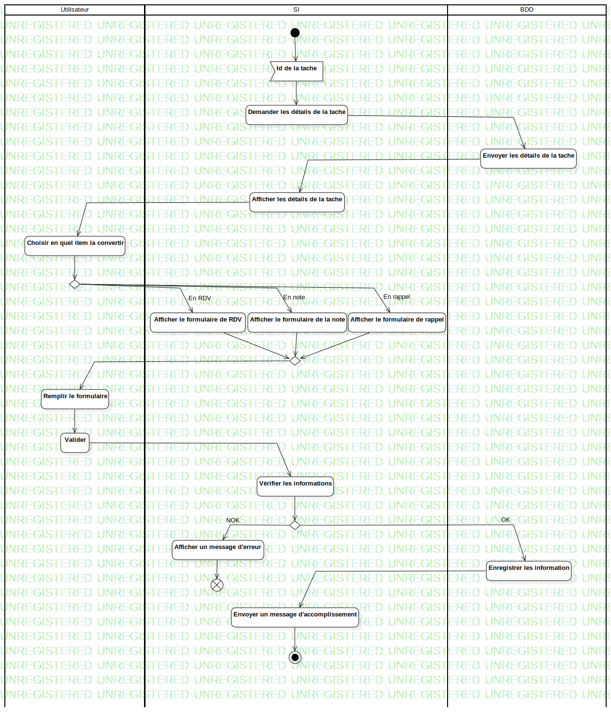

ActD Convertir un RDV
UMLActivity
Untitled
::
RDV
::
ActD Convertir un RDV
Description
none
Diagrams

ActD Convertir un RDV
Groups
Utilisateur
SI
BDD
Nodes
FlowFinalNode1
Edges
(InitialNode1→Id de la tache)
(Id de la tache→Demander les détails de la tache)
(Demander les détails de la tache→Envoyer les détails de la tache)
(Envoyer les détails de la tache→Afficher les détails de la tache)
(Afficher les détails de la tache→Choisir en quel item la convertir)
(Choisir en quel item la convertir→DecisionNode1)
(Afficher le formulaire de RDV→MergeNode1)
(Afficher le formulaire de la note→MergeNode1)
(Afficher le formulaire de rappel→MergeNode1)
(MergeNode1→Remplir le formulaire)
(Remplir le formulaire→Valider)
(Valider→Vérifier les informations)
(Vérifier les informations→DecisionNode1)
NOK (DecisionNode1→Afficher un message d'erreur)
OK (DecisionNode1→Enregistrer les information)
(Enregistrer les information→Envoyer un message d'accomplissement)
(Envoyer un message d'accomplissement→ActivityFinalNode1)
En RDV (DecisionNode1→Afficher le formulaire de RDV)
En note (DecisionNode1→Afficher le formulaire de la note)
En rappel (DecisionNode1→Afficher le formulaire de rappel)
(Afficher un message d'erreur→FlowFinalNode1)
Properties
Name
Value
name
ActD Convertir un RDV
stereotype
null
visibility
public
isReentrant
true
isReadOnly
false
isSingleExecution
false
Owned Elements
ActD Convertir un RDV